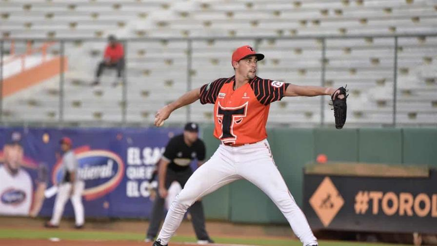
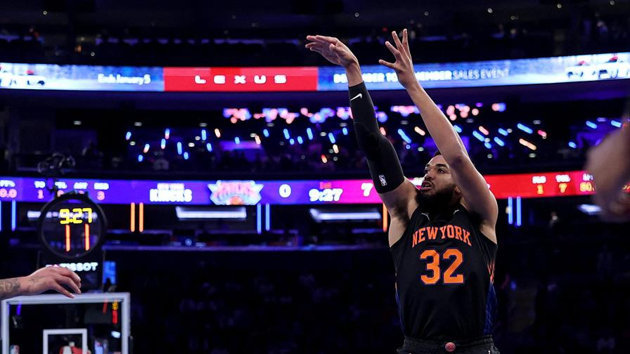
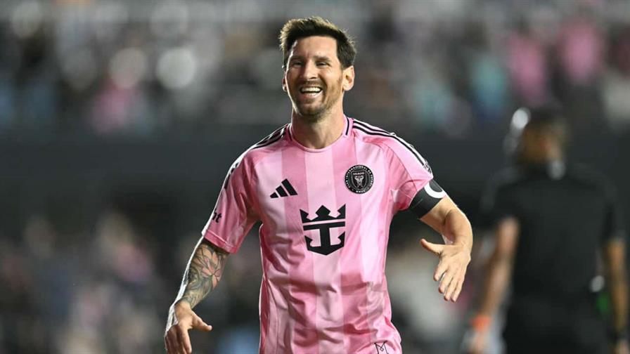
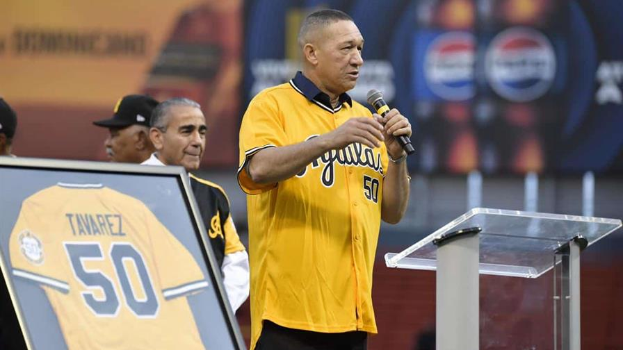

Toros apalean Águilas y Aaron Sánchez lanza siete entradas de solo una carrera
Publicado por Jonathan

Aaron Sánchez estuvo magistral desde el montículo, con siete entradas de labor monticular, y Bryan De La
Cruz conectó cuadrangular y remolcó cuatro, para guiar a los Toros del Este a una victoria ante las
Aguilas Cibaeñas con marcador 10-3, en partido celebrado en el Estadio Francisco A. Micheli.
El abridor taurino Aaron Sánchez (4-2, 1.55) completó siete sólidas entradas de tres carreras, dos
limpias, seis hits, un boleto y tres ponches, en su última salida de la temporada regular. Sánchez
estará de regreso para el Round Robin con los Toros, en caso de que el club mantenga una posición
clasificatoria.
Sánchez retiró a los últimos 12 bateadores que enfrentó y cerró la Serie Regular lanzando al menos 5
innings y permitiendo no más de 2 carreras limpias en todas sus salidas.
Con la victoria, los Toros mejoran su récord a 16-15, logrando su segundo triunfo consecutivo, y
mantienen dos juegos de ventaja en la segunda posición del standing, tan sólo detrás de las Águilas que
colocan su foja en 23-7.
Basket
Towns en el máximo anotador de los Knicks en triunfo sobre Toronto
Publicado por Alex

El dominicano Karl Anthony-Towns fue el máximo anotador con 22 puntos mientras que el alero Josh
Hart completó un doble-doble con 20 puntos y 12 rebotes, para que los Knicks de Nueva York
superaran 116-94 a los Toronto Raptors frente a 19.812 aficionados en el mítico Madison Square
Garden en el corazón de Manhattan.
El cuadro canadiense anotó la primera canasta del partido y sostuvo el liderato por unos
segundos, el resto del juego fue todo para los neoyorquinos que tuvieron una racha de hasta 14
puntos al hilo.
El dominicano Karl Anthony-Towns fue el máximo anotador con 22 puntos mientras que el alero Josh
Hart completó un doble-doble con 20 puntos y 12 rebotes.
"Fuimos muy disciplinados esta noche", comentó Hart. "Trato de correr y hacer mi mejor esfuerzo,
todas las noches me toca hacer algo diferente".
Hart, de 30 años, suma 48 rebotes y 28 asistencias en sus últimos cuatro partidos.
Jalen Brunson, a quien Mike Brown consideró un candidato al premio al Jugador Más Valioso (MVP),
fue el tercer mejor anotador con 18 unidades en una noche de pobre efectividad desde la cancha
con un 32% (6/19).
Pese a la derrota, Toronto reporta una mejora significativa en sus primeros 20 partidos con 14
triunfos y seis derrotas a diferencia de los cinco triunfos y 15 derrotas del 2024.
Futbol
El Inter de Messi aplasta a NY City y avanza a su primera final de MLS
Publicado por Benito

En una noche mágica frente a sus aficionados, el Inter Miami de Lionel Messi goleó 5-1 este
sábado al New York City y clasificó a la primera final de la liga norteamericana (MLS) de su
historia.
El argentino Tadeo Allende fue el héroe de la clasificación al convertir un triplete de
goles, mientras su compatriota Mateo Silvetti y el venezolano Telasco Segovia redondearon la
manita.
Messi, que dio la asistencia del tanto de Silvetti, tendrá su primera oportunidad de
coronarse campeón de la MLS en la final que se jugará el 6 de diciembre en la cancha del
Inter.
Su rival será el vencedor del duelo que sostienen este sábado el San Diego FC de Hirving
"Chucky" Lozano y el Vancouver Whitecaps de Thomas Müller.
El triunfo le entregó al Inter su primer título de la Conferencia Este, que celebró a lo
grande con los casi 22.000 aficionados del Chase Stadium de Fort Lauderdale (afueras de
Miami) e invitados especiales como la estrella del tenis español Carlos Alcaraz, que vibró
con cada gol sentado detrás del banco de Javier Mascherano.
El propio Alcaraz, número uno del tenis mundial, le entregó el trofeo de campeón del Este al
10 argentino.
El Inter, una franquicia con seis temporadas de vida en la MLS, está a un paso de cumplir su
promesa de dominar el fútbol norteamericano que realizó con la llegada de Messi a mediados
de 2023.
Por una vez, el astro argentino le cedió el protagonismo a sus compañeros de ataque, en
especial a Allende.
El atacante cordobés se ha erigido en el principal artillero del Inter en estos playoffs con
ocho tantos en cinco partidos.
Este triunfo también permite que Sergio Busquets y Jordi Alba, que brillaron como asistentes
este sábado, se despidan del fútbol pugnando por un nuevo título en sus extraordinarias
carreras.
Beisbol
Las Águilas Cibaeñas retiran el número 50 de Julián Tavárez
Publicado por Juan

Las Águilas Cibaeñas honraron la trayectoria de uno de sus íconos, el lanzador Julián
Tavárez, retirando el número 50 que utilizó durante su larga estadía con el equipo,
previo al partido contra los Tigres del Licey, la tarde-noche del sábado en el Estadio
Cibao.
En un abarrotado estadio que fue testigo de grandes hazañas de Tavárez, las Águilas
reconocieron el orgullo con que el "Muñeco" vistió la franela número 50.
Tavárez recibió la camiseta enmarcada que lució con las Águilas junto a una placa,
entregada por Víctor García Sued, presidente del Consejo Directivo de Águilas Cibaeñas.